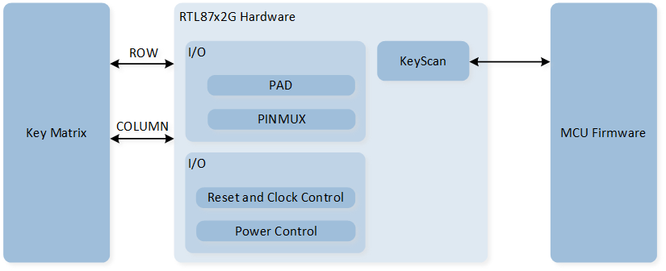
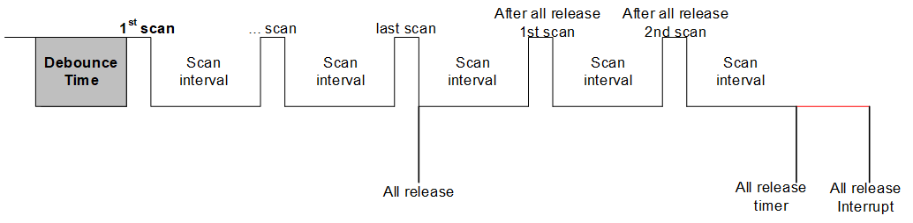
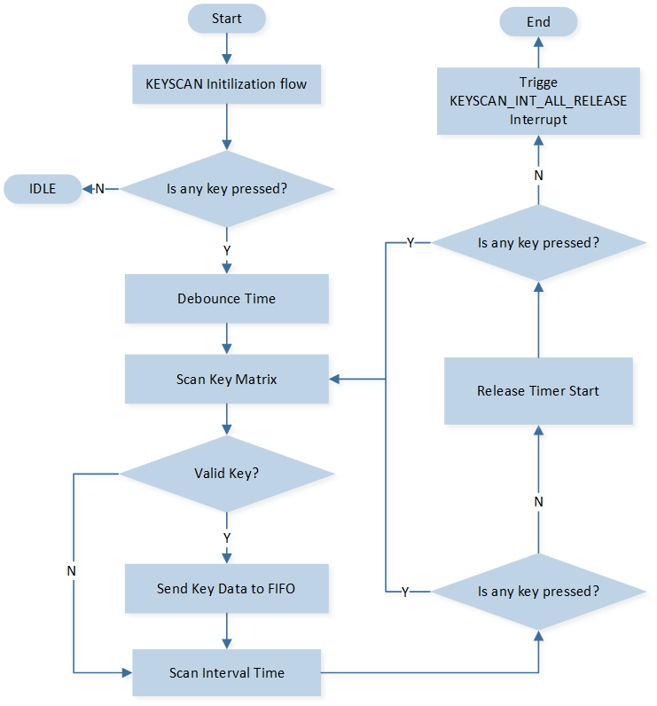
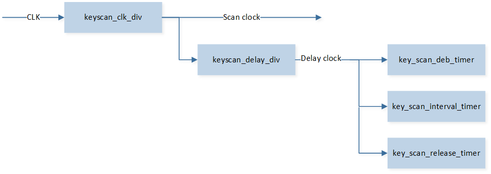

KEYSCAN
Sample List
This chapter introduces the details of the KeyScan sample code. The RTL87x2G provides the following samples for the KeyScan peripheral.
Functional Overview
The RTL87x2G supports a configurable 12 rows * 20 columns key matrix with key scan. Each IO PAD could be configured as any row or column pin of key scan. KeyScan needs to be used with an external key matrix.
Feature List
Support 12 (row) * 20 (column) matrix scan.
Configurable number of rows (1-12), columns (1-20).
Support hardware debounce, configurable debounce time.
Configurable scan clock.
Support multi-key detection, up to 26 keys can be pressed at the same time.
Support periodic scan, configurable scan period.
26 bytes FIFO depth.
Support auto scan and manual scan.
Support all key release hardware detection.
Block Diagram
Here is the block diagram of Keyscan. When an external matrix keyboard detects a key press, the hardware will automatically scan the key information and store it in the Keyscan peripheral. The MCU firmware will then read the key information from Keyscan and perform analysis.

System Block Diagram of Keyscan
Scanning Process
The scanning process of Keyscan is as shown in the diagram:

KeyScan Scanning Diagram
In idle state, all row[x] serve as input, in pull-up state, while all column[y] serve as output, outputting low level.
When any key is pressed, a low level will be detected in a certain row, triggering the KeyScan hardware scanning action.
After waiting for the debounce timer, the first scan begins.
First, pull column[0] low, while the other columns are pulled high, and sequentially detect row[0], row[1], ..., row[N].
If row[0] is detected to be pulled low, it can be confirmed that (row[0], column[0]) is pressed; otherwise, the key is not pressed. Continue scanning other rows in this manner.
Switch to pulling column[1] low, the other columns are pulled high, sequentially detect row[0], row[1], ..., row[N], until the last column[N] is pulled low and the other columns are pulled high, scanning is complete.
At this point, one scan is complete, and the scanning result will be filled into the Keyscan FIFO. If the
KEYSCAN_INT_SCAN_ENDinterrupt is enabled, it will trigger this interrupt.After the scan interval time, a second global scan will be conducted, and the same operation will be performed after the scan ends.
If no key press is detected during a scan, the all release timer will start counting, and all columns will be pulled low. If no row is detected to be pulled low after the all release timer finishes counting, it indicates that all keys are released at this time. If the
KEYSCAN_INT_ALL_RELEASEinterrupt is enabled, it will trigger this interrupt.
Keyscan scanning is divided into manual scanning mode and automatic scanning mode.
Manual Scan Mode
Configure KEYSCAN_InitTypeDef::scanmode as KeyScan_Manual_Scan_Mode during Keyscan initialization to set Keyscan to manual scan mode.
In manual scan mode, there are two ways to trigger a Keyscan scan: key trigger and register trigger.
Key Trigger: After enabling Keyscan, a scan is triggered only when an external key press is detected. During initialization, configure
KEYSCAN_InitTypeDef::manual_selasKeyScan_Manual_Sel_Key.Register Trigger: After initializing Keyscan, call the
KeyScan_Cmd()function to trigger a Keyscan scan; external keys cannot trigger a scan. During initialization, configureKEYSCAN_InitTypeDef::manual_selasKeyScan_Manual_Sel_Bit.
In manual scan mode, Keyscan will perform only one scan, and upon completion, it will trigger the KEYSCAN_INT_SCAN_END interrupt.
Automatic Scan Mode
Configure KEYSCAN_InitTypeDef::scanmode as KeyScan_Auto_Scan_Mode during Keyscan initialization to set Keyscan to automatic scan mode.
In automatic scan mode, Keyscan is triggered by external key presses.
The trigger mode can be modified to edge-triggered (KeyScan_Detect_Mode_Edge) or level-triggered (KeyScan_Detect_Mode_Level) by setting KEYSCAN_InitTypeDef::detectMode.
In automatic scan mode, Keyscan will continuously scan until no keys are pressed, which triggers the KEYSCAN_INT_ALL_RELEASE interrupt.
The KEYSCAN_INT_SCAN_END interrupt can be triggered multiple times.
The workflow of automatic scanning is shown in the figure below.

Auto Scan Flow Chart
Clock Divider
Peripheral clock will be divided into 2 channels.
The KeyScan scan clock is generated by the frequency division of keyscan_clk_div .
Scan clock = Keyscan clock source (5MHz) / KEYSCAN_InitTypeDef::clockdiv.
The low-level delay clock is generated by the frequency division of keyscan_delay_div for use by the relevant timer.
Delay clock = Scan clock / KEYSCAN_InitTypeDef::delayclk.
key_scan_deb_timer is used for debounce timing, where debounce time = Delay clock * KEYSCAN_InitTypeDef::debouncecnt.
key_scan_interval_timer is used for scan interval timing, where scan interval time = Delay clock * KEYSCAN_InitTypeDef::scanInterval.
key_scan_release_timer is used for release time timing, where release time = Delay clock * KEYSCAN_InitTypeDef::releasecnt.

Schematic Diagram of KeyScan Clock Divider